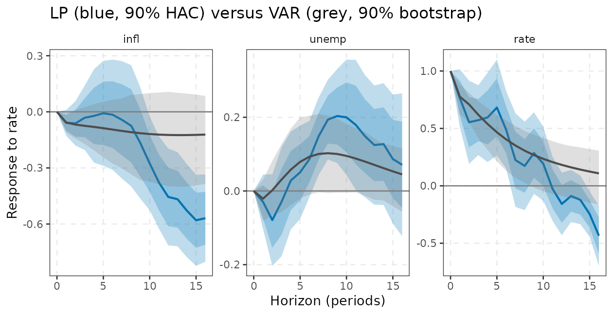
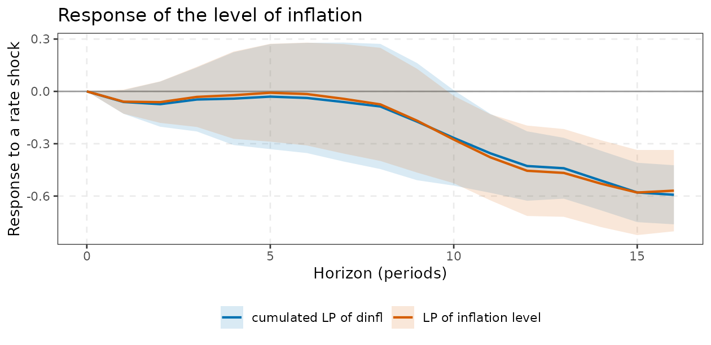
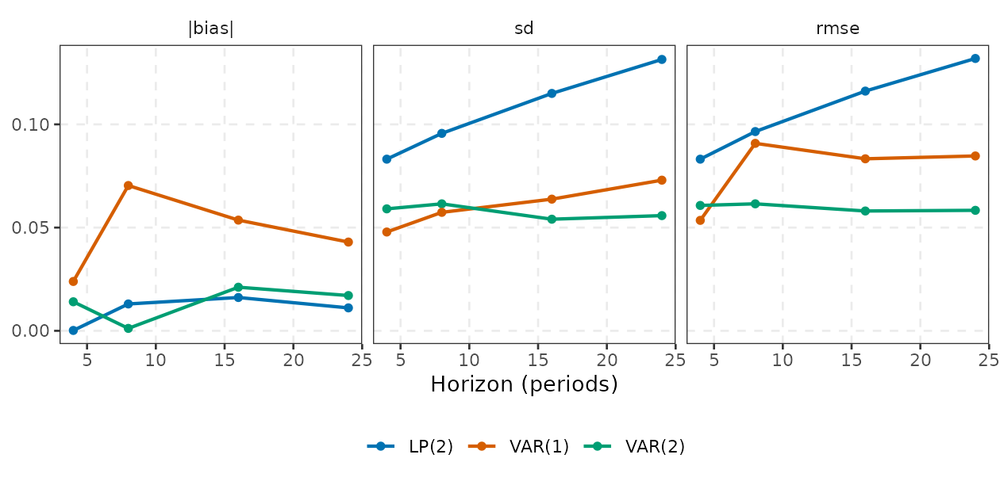
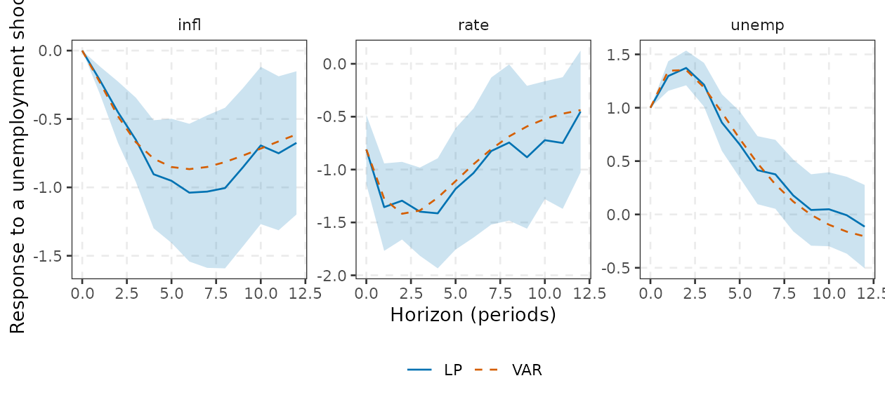

Local projections and the LP versus VAR trade-off
Source:vignettes/local-projections.Rmd
local-projections.Rmd1. Definition and derivation
1.1 From direct forecasts to impulse responses
Write the
-step-ahead
conditional expectation of
given the information at
.
A VAR obtains it by iterating the one-step model
times. Jordà (2005) instead regresses
directly on the
time-
information, one regression per horizon
and response
:
where
is the shock (or the variable being shocked),
collects controls (lags of the system, optionally contemporaneous
variables) and
is the response at horizon
to a unit change in
:
.
Since
holds what must be held fixed for
to be as good as randomly assigned, the coefficient is a causal response
whenever
is exogenous conditional on
,
and nothing else about the dynamics is assumed. lp() runs
the
regressions for all responses at once in C++ (cpp_lp).
1.2 Why the residuals are moving averages
Iterating the data-generating process forward, contains every innovation that arrives between and (the -step forecast error). In a correctly specified model it is therefore an MA() process even when the innovations are i.i.d.: and share innovations for . Residuals are serially correlated by construction, the more so at long horizons, and ordinary OLS standard errors are wrong; heteroskedasticity- and autocorrelation-robust (HAC) errors are required. In practice the exact MA order is unknown (the model is misspecified for large), which is why the default truncation is a deliberately generous upper bound.
1.3 Identification and the link to the Cholesky VAR
Identification enters through and .
-
Recursive (Cholesky) scheme. Let
be the policy rate and put in
the current values of the variables ordered before it
(
contemp) plus lags. Then is the response to a shock with unit impact on the rate. Plagborg-Møller and Wolf (2021) show that, at the population level and with the same lags, this equals , the Cholesky impulse response of a VAR normalised to a unit impact on variable , which invarmisirf(normalise = normalise_to("rate", "rate", size = 1)). Variables ordered after the shock are left out ofcontemp. The recursive LP and the Cholesky VAR therefore estimate the same object; they differ only in how they use the data (section 6). -
Unit-impact normalisation. When
shockis a column ofY, the regressor is the variable itself, so for that variable by construction and the response is per one unit of the variable, not per standard deviation. To convert, multiply by the standard deviation of the structural shock. -
Observed or external shock. If
shockis a numeric vector of length (a narrative or high-frequency shock series), it enters as with its own lags in ; is the response per unit of that series. -
External instrument (LP-IV). If
is endogenous, instrument it by
(
iv =): two-stage least squares at each horizon, with normalised to one (Stock and Watson, 2018; Ramey, 2016). The controls serve as exogenous regressors in both stages.
1.4 Inference as implemented
Let be the regressors of horizon ( columns, observations), the residuals and the influence weight of (in 2SLS the fitted values replace ). With :
-
se = "nw": Newey-West with Bartlett weights and truncation by default (nw_lagchanges it, e.g. to a fixed value across horizons), , or withdof_adjust = TRUE. -
se = "hc": Eicker-Huber-White HC1, i.e. and always;nw_lagis ignored. It treats the residuals as serially uncorrelated and is not valid by itself at unless lags are augmented. -
lag_augment = TRUE: Montiel Olea and Plagborg-Møller (2021) show that if one extra lag is added to the controls and not interpreted, the heteroskedasticity-robust standard errors are valid without HAC, uniformly over stationary and persistent data, and over horizons. The reason is that the extra lag makes the regressor of interest asymptotically orthogonal to the serial correlation of the residual. The option adds one lag tolagsand switchesseto"hc";lagsandnw_lagthen no longer mean what they did, sofit$lagsreports the lag count actually used.
2. LP on yraw versus the VAR
We estimate the response to a policy-rate shock under the recursive ordering inflation, unemployment, rate, with two lags, both ways:
Variables are named with tidyselect syntax (bare names, strings or
c()/all_of()). glance()
summarises the specification and tidy() returns one row per
horizon, response and band level:
l <- lp(yraw, shock = rate, horizon = 16, lags = 2, contemp = c(infl, unemp))
l
#> <lpm> local projection of infl, unemp, rate on 'rate', horizons 0..16 (2 lags, NW)
#> infl unemp rate
#> 0 0.0000 0.0000 1.0000
#> 1 -0.0589 -0.0295 0.7650
#> 4 -0.0217 0.0284 0.5960
#> 8 -0.0745 0.1937 0.1735
#> 12 -0.4550 0.1486 -0.1578
#> 16 -0.5689 0.0709 -0.4345
glance(l)
#> # A tibble: 1 × 6
#> shock horizon lags se_type iv nobs
#> <chr> <int> <int> <chr> <lgl> <dbl>
#> 1 rate 16 2 nw FALSE 213
head(tidy(l), 4)
#> # A tibble: 4 × 7
#> horizon response estimate std.error level conf.low conf.high
#> <int> <fct> <dbl> <dbl> <dbl> <dbl> <dbl>
#> 1 0 infl -1.24e-14 1.37e-13 0.9 -2.39e-13 2.14e-13
#> 2 1 infl -5.89e- 2 4.20e- 2 0.9 -1.28e- 1 1.01e- 2
#> 3 2 infl -6.16e- 2 7.23e- 2 0.9 -1.81e- 1 5.74e- 2
#> 4 3 infl -3.15e- 2 1.05e- 1 0.9 -2.04e- 1 1.41e- 1
fit <- varm(yraw, p = 2)
v <- irf(fit, horizon = 16, ci = "bootstrap", nboot = 300,
normalise = normalise_to("rate", "rate", size = 1))At
the response of the shock variable is one and that of every variable in
contemp is zero, by construction (they are regressors);
their reported standard errors are numerical zeros of order
,
not real precision, so ignore the width of the band there.
autoplot() returns a ggplot that takes
ordinary ggplot2 layers. To overlay the VAR we bind the two tidy
tibbles:
var90 <- subset(tidy(v), shock == "rate" & level == 0.9)
autoplot(l) +
geom_ribbon(aes(ymin = conf.low, ymax = conf.high), data = var90, fill = "grey50", alpha = 0.25) +
geom_line(data = var90, colour = "grey30", linewidth = 0.8) +
labs(title = "LP (blue, 90% HAC) versus VAR (grey, 90% bootstrap)")
The LP point estimates track the VAR responses at short horizons and become jagged at long horizons, with much wider bands: the signature of the bias-variance trade-off analysed in section 6. Because each horizon is a separate regression, nothing forces the LP response to be smooth.
Speed is rarely a concern: on an Apple M4 Pro a full three-response
lp() with
takes about 0.5 ms per call, against about 0.05 ms for the OLS
varm() (mean over repeated calls; your machine will
differ).
Economic intuition / how to use it
The LP is a direct regression: “if the rate is 1 point higher today, by how much does unemployment differ quarters later, controlling for the past and for current inflation and unemployment?”. It gives the sign and rough size of the effect with minimal assumptions about the dynamics, a good diagnostic alongside the VAR. A large disagreement between LP and VAR at medium horizons is informative: it flags a VAR lag order that is too short (misspecification) or an LP with too little data.
3. Standard errors: HAC versus heteroskedasticity-robust
se_nw <- lp(yraw, rate, horizon = 16, lags = 2, contemp = c(infl, unemp), se = "nw")
se_dof <- lp(yraw, rate, horizon = 16, lags = 2, contemp = c(infl, unemp), se = "nw", dof_adjust = TRUE)
se_hc <- lp(yraw, rate, horizon = 16, lags = 2, contemp = c(infl, unemp), se = "hc")
se_la <- lp(yraw, rate, horizon = 16, lags = 2, contemp = c(infl, unemp), lag_augment = TRUE)
round(rbind(`Newey-West (h+1)` = se_nw$se[c(2, 5, 9, 13, 17), "unemp"],
`NW + dof_adjust` = se_dof$se[c(2, 5, 9, 13, 17), "unemp"],
`HC1` = se_hc$se[c(2, 5, 9, 13, 17), "unemp"],
`lag-augmented HC` = se_la$se[c(2, 5, 9, 13, 17), "unemp"]), 3)
#> 1 4 8 12 16
#> Newey-West (h+1) 0.045 0.081 0.066 0.101 0.118
#> NW + dof_adjust 0.046 0.083 0.067 0.103 0.121
#> HC1 0.044 0.089 0.101 0.128 0.108
#> lag-augmented HC 0.046 0.093 0.105 0.130 0.109(Columns are horizons 1, 4, 8, 12, 16.) The three estimators differ
most at medium horizons: here Newey-West is smaller than the
heteroskedasticity-robust HC1 at horizons 4 to 12. Newey-West with a
bandwidth that is a large share of
is known to be biased downward and to produce size distortions in small
samples (use dof_adjust = TRUE for an
factor), and HC1 alone ignores the
MA()
error structure, so neither is dependable by itself at long horizons.
The lag-augmented HC standard errors have a theoretical justification
that does not depend on persistence or on a bandwidth: the extra lag is
a control only and its coefficient is not reported. They are a sensible
default when the data may be persistent or the horizon is a sizeable
fraction of the sample, but as the simulation below shows they do not
remove the finite-sample shortfall.
When does lag augmentation help? A small Monte Carlo
Lag augmentation matters when the data are persistent. We simulate a bivariate VAR(1) with a near-unit root, , a recursive identification, and compute the coverage of the pointwise 90% band for the response of to a unit impulse in , for Newey-West and for lag-augmented HC errors. (300 replications: coverage figures carry a Monte Carlo error of about .)
set.seed(11)
A <- matrix(c(0.97, 0.15, 0, 0.6), 2, 2, byrow = FALSE) # persistent x, y driven by x
Pm <- t(chol(matrix(c(1, 0.3, 0.3, 1), 2)))
hz <- c(1, 4, 8, 12)
truth_aug <- sapply(0:12, function(h) { M <- diag(2); for (i in seq_len(h)) M <- A %*% M; (M %*% Pm[, 1] / Pm[1, 1])[2] })[hz + 1]
cover <- function(la, R = 300) {
hit <- matrix(0, R, length(hz))
for (r in seq_len(R)) {
e <- matrix(rnorm(2 * 300), 300) %*% t(Pm); Yb <- matrix(0, 300, 2)
for (t in 2:300) Yb[t, ] <- A %*% Yb[t - 1, ] + e[t, ]
Yb <- Yb[101:300, ]; colnames(Yb) <- c("x", "y")
f <- lp(Yb, x, horizon = 12, lags = 1, responses = y, lag_augment = la, level = 0.9)
hit[r, ] <- truth_aug >= f$bands[hz + 1, 1, 1] & truth_aug <= f$bands[hz + 1, 1, 2]
}
colMeans(hit)
}
round(rbind(`Newey-West` = cover(FALSE), `lag-augmented HC` = cover(TRUE)) |> `colnames<-`(paste0("h=", hz)), 2)
#> h=1 h=4 h=8 h=12
#> Newey-West 0.91 0.85 0.82 0.81
#> lag-augmented HC 0.88 0.88 0.82 0.80Coverage is at or below the 0.90 target at every horizon beyond the
first (roughly 0.80 to 0.88), and in this design lag augmentation does
not clearly improve on Newey-West at long horizons: the
differences of 0.01 to 0.03 are within Monte Carlo error, and at
Newey-West is actually closer to nominal. What lag augmentation buys is
mainly theoretical, namely validity that does not depend on persistence
or on a bandwidth choice. In the whole-path (sup-t) simulation of
vignette("lp-advanced") it helps somewhat (0.84 against
0.78 at a nominal 0.90) but does not close the gap. It is no cure for a
short sample with a highly persistent regressor, where the effective
sample is small, and it costs a slightly larger standard error because
the extra lag is estimated and not used. Treat all LP bands at long
horizons as somewhat optimistic.
4. External shocks and LP-IV
When
is an externally identified shock series (narrative, high-frequency, or
a VAR residual from another study), pass it as shock. When
the regressor is the policy rate itself but the shock is only observed
through an instrument
,
pass iv. We illustrate with a constructed
instrument: the estimated Cholesky policy shock plus independent noise,
mimicking a noisy high-frequency measure (this is a simulation device;
yraw contains no instrument).
u <- resid(fit)[, 3] # "true" shock from the VAR
z <- c(rep(0, 2), u) + rnorm(nrow(y), sd = sd(u)) # noisy measure of the shock
l_ols <- lp(yraw, rate, horizon = 8, lags = 2, contemp = c(infl, unemp))
l_iv <- lp(yraw, rate, horizon = 8, lags = 2, contemp = c(infl, unemp), iv = cbind(z = z))
l_ext <- lp(y, shock = z, horizon = 8, lags = 2) # z as the shock itself (units of z, no normalisation)
round(rbind(`OLS, recursive` = l_ols$estimate[, "unemp"],
`IV (z)` = l_iv$estimate[, "unemp"],
`external shock` = l_ext$estimate[, "unemp"]), 3)
#> 0 1 2 3 4 5 6 7 8
#> OLS, recursive 0.000 -0.030 -0.079 -0.029 0.028 0.051 0.086 0.149 0.194
#> IV (z) 0.000 0.015 -0.047 -0.009 -0.004 0.008 0.070 0.134 0.182
#> external shock -0.086 -0.107 -0.141 -0.113 -0.080 -0.054 -0.003 0.033 0.076The IV and OLS results differ because the IV does not require the
recursive timing assumption (only that
is correlated with the policy shock and orthogonal to other shocks). The
external-shock row is a reduced-form response per unit of
;
to compare it with the others divide by its impact response on the rate
(l_ext$estimate[1, "rate"]). lp() does not
report instrument strength: check the first-stage
statistic yourself before trusting LP-IV (a weak instrument makes the IV
estimates and their normal bands unreliable at every horizon).
5. Cumulative responses
For a variable in differences, cumulate the left-hand side. Below, inflation enters in differences and we recover the response of its level:
yd <- cbind(dinfl = diff(y[, "infl"]), y[-1, c("unemp", "rate")])
lc <- lp(yd, rate, horizon = 16, lags = 2, contemp = c(dinfl, unemp), cumulative = dinfl)
l_lev <- lp(yraw, rate, horizon = 16, lags = 2, contemp = c(infl, unemp)) # inflation in levels
cum <- rbind(cbind(method = "cumulated LP of dinfl", subset(tidy(lc), response == "dinfl" & level == 0.9)),
cbind(method = "LP of inflation level", subset(tidy(l_lev), response == "infl" & level == 0.9)))
ggplot(cum, aes(horizon, estimate, colour = method, fill = method)) +
geom_hline(yintercept = 0, colour = "grey60") +
geom_ribbon(aes(ymin = conf.low, ymax = conf.high), alpha = 0.15, colour = NA) +
geom_line(linewidth = 0.8) +
scale_colour_manual(values = varm_palette(2), name = NULL) +
scale_fill_manual(values = varm_palette(2), name = NULL) +
labs(x = "Horizon (periods)", y = "Response to a rate shock",
title = "Response of the level of inflation") +
theme_varm()
6. LP versus VAR: the bias-variance trade-off
Population equivalence. With enough lags both estimate the same IRF. Plagborg-Møller and Wolf (2021) show that LP and VAR() responses coincide; the difference is statistical. A VAR with lags imposes that the response at horizon is , a nonlinear function of the first matrices (parsimony, smoothness, extrapolation of short-run dynamics to long horizons). An LP imposes nothing. Hence:
| VAR() | LP | |
|---|---|---|
| bias | grows with horizon if is too small (misspecification) | small at all horizons |
| variance | low (parameters pooled across horizons) | high at long horizons (one regression per horizon, overlapping MA() errors) |
| shape | smooth, monotone decay | erratic |
| efficiency under correct model | efficient | inefficient |
| extension | closed-form FEVD, HD, forecasts | nonlinear/state-dependent versions are straightforward |
Li, Plagborg-Møller and Wolf (2024) confirm in thousands of DGPs that
this trade-off is systematic: LP has lower bias but much higher
variance, and the mean-squared-error ranking depends on the persistence
of the data, the sample size and the horizon. We reproduce the logic in
a small Monte Carlo. The DGP is the VAR(2) fitted to yraw
(so it has the persistence of real macro data), with
and a recursive identification. We estimate the response of unemployment
to a unit policy-rate shock by (a) the correctly specified VAR(2), (b) a
misspecified VAR(1) and (c) LP with two lags.
true_fit <- fit; P <- t(chol(true_fit$Sigma))
sim <- function(Tn, burn = 100, p = 2) {
n <- Tn + burn; Y <- matrix(0, n, 3)
for (t in (p + 1):n) Y[t, ] <- c(Y[t - 1, ], Y[t - 2, ], 1) %*% true_fit$B + drop(P %*% rnorm(3))
colnames(Y) <- colnames(y); Y[-seq_len(burn), ]
}
nm <- normalise_to("rate", "rate", size = 1)
H <- 24; hs <- c(4, 8, 16, 24)
truth <- irf(true_fit, horizon = H, ci = "none", normalise = nm)$estimate["unemp", "rate", hs + 1]
R <- 500
est <- array(NA_real_, c(R, 3, length(hs)), dimnames = list(NULL, c("VAR(2)", "VAR(1)", "LP(2)"), paste0("h=", hs)))
for (r in seq_len(R)) {
Y <- sim(200)
est[r, 1, ] <- irf(varm(Y, 2), horizon = H, ci = "none", normalise = nm)$estimate["unemp", "rate", hs + 1]
est[r, 2, ] <- irf(varm(Y, 1), horizon = H, ci = "none", normalise = nm)$estimate["unemp", "rate", hs + 1]
est[r, 3, ] <- lp(Y, rate, horizon = H, lags = 2, contemp = c(infl, unemp))$estimate[hs + 1, "unemp"]
}
bias <- apply(est, c(2, 3), mean) - rep(truth, each = 3)
sdv <- apply(est, c(2, 3), sd)
rmse <- sqrt(bias^2 + sdv^2)
rbind(truth = round(truth, 3))
#> 4 8 16 24
#> truth 0.058 0.103 0.045 0.001
list(bias = round(bias, 3), sd = round(sdv, 3), rmse = round(rmse, 3))
#> $bias
#> h=4 h=8 h=16 h=24
#> VAR(2) 0.014 0.001 -0.021 -0.017
#> VAR(1) -0.024 -0.070 -0.054 -0.043
#> LP(2) 0.000 -0.013 -0.016 -0.011
#>
#> $sd
#> h=4 h=8 h=16 h=24
#> VAR(2) 0.059 0.061 0.054 0.056
#> VAR(1) 0.048 0.057 0.064 0.073
#> LP(2) 0.083 0.096 0.115 0.131
#>
#> $rmse
#> h=4 h=8 h=16 h=24
#> VAR(2) 0.061 0.062 0.058 0.058
#> VAR(1) 0.053 0.091 0.083 0.085
#> LP(2) 0.083 0.097 0.116 0.132
stat <- list(`|bias|` = abs(bias), sd = sdv, rmse = rmse)
mc <- do.call(rbind, lapply(names(stat), function(w) {
m <- stat[[w]]
tibble::tibble(statistic = factor(w, names(stat)), method = rep(rownames(m), ncol(m)),
horizon = rep(hs, each = nrow(m)), value = as.vector(m))
}))
mc
#> # A tibble: 36 × 4
#> statistic method horizon value
#> <fct> <chr> <dbl> <dbl>
#> 1 |bias| VAR(2) 4 0.0141
#> 2 |bias| VAR(1) 4 0.0239
#> 3 |bias| LP(2) 4 0.000177
#> 4 |bias| VAR(2) 8 0.00117
#> 5 |bias| VAR(1) 8 0.0704
#> 6 |bias| LP(2) 8 0.0130
#> 7 |bias| VAR(2) 16 0.0211
#> 8 |bias| VAR(1) 16 0.0536
#> 9 |bias| LP(2) 16 0.0161
#> 10 |bias| VAR(2) 24 0.0171
#> # ℹ 26 more rows
ggplot(mc, aes(horizon, value, colour = method)) +
geom_line(linewidth = 0.8) + geom_point() +
facet_wrap(~statistic) +
scale_colour_manual(values = varm_palette(3), name = NULL) +
labs(x = "Horizon (periods)", y = NULL) +
theme_varm()
The results are what theory predicts: LP has small bias but a standard deviation 1.4 to 2.3 times larger (growing with the horizon), and the VAR(1) has a bias that is largest at medium horizons (its dynamics are too simple). The correctly specified VAR(2) has an RMSE of about 0.06 at every horizon, whereas the LP’s RMSE rises from 0.08 to 0.13. The misspecified VAR(1) is even slightly better than VAR(2) at h = 4, which is why parsimonious VARs often win in forecasting exercises.
compare_lp_var()
compare_lp_var() runs the comparison for you with the
same lags and the same recursive ordering (column order of
Y), normalising the VAR to a unit impact on the shock
variable, and reports the difference in units of the LP standard error.
With the default se, the printed summary is the mean $|{\rm LP}-{\rm VAR}|/\widehat{\rm se}_{\rm
LP}$ over three horizon blocks; large values at long horizons
point to VAR misspecification or to LP noise.
cmp <- compare_lp_var(yraw, shock = unemp, horizon = 12, lags = 2)
cmp
#> <lp_var_cmp> shock 'unemp', 2 lags; mean |LP - VAR| / se_LP by horizon block:
#> infl rate unemp
#> short 0.274 0.276 0.701
#> medium 0.498 0.152 0.344
#> long 0.189 0.519 0.500
cmp |>
subset(response == "infl" & horizon %in% c(0, 4, 8, 12), select = c(horizon, lp, lp_se, var, diff, z)) |>
as.data.frame() |>
round(3)
#> horizon lp lp_se var diff z
#> 1 0 0.000 0.000 0.000 0.000 -0.329
#> 2 4 -0.904 0.240 -0.790 -0.114 -0.476
#> 3 8 -1.005 0.357 -0.815 -0.190 -0.533
#> 4 12 -0.675 0.318 -0.613 -0.062 -0.194The result is a tibble with columns horizon,
response, lp, lp_se,
var, diff and z, so it goes
straight into ggplot2:
ggplot(cmp, aes(horizon)) +
geom_ribbon(aes(ymin = lp - 1.645 * lp_se, ymax = lp + 1.645 * lp_se), fill = varm_palette(1), alpha = 0.2) +
geom_line(aes(y = lp, colour = "LP")) +
geom_line(aes(y = var, colour = "VAR"), linetype = "dashed") +
facet_wrap(~response, scales = "free_y") +
scale_colour_manual(values = varm_palette(2), name = NULL) +
labs(x = "Horizon (periods)", y = "Response to a unemployment shock") +
theme_varm()
The
row is exact by construction (the response of a variable that is itself
a regressor), with a numerical-zero standard error, so its
z is not informative. Note that the shock here is
unemployment (ordered second), so the only contemporaneous control is
inflation. Two further points. First, the population equivalence is an
asymptotic statement: with
the differences above are estimation noise, not a failure of the theory.
Second, compare_lp_var() returns VAR point
estimates; for a VAR band use irf(ci = "bootstrap") as
in section 2.
Cross-checking against lpirfs
The recursive LP in lp() was compared with
lpirfs::lp_lin(). The two agree closely, but they
are not reconciled exactly: differences of up to about 0.03
appear at long horizons. We attribute them to sample alignment and the
construction of the contemporaneous controls, but we have not confirmed
this. If you need numbers that match lpirfs to the digit,
use lpirfs; the discrepancy is small relative to the
sampling error of an LP at those horizons (section 6, bands). The
state-dependent version, by contrast, reproduces
lpirfs::lp_nl to about
under its timing = "lagged" convention
(vignette("lp-advanced")).
When to prefer which
-
Prefer a VAR when the horizon is short or moderate,
the sample is short, you want smooth responses with tight bands, FEVD/HD
or forecasts, or the system is large (with shrinkage:
vignette("bayesian-var")). - Prefer LP when robustness to misspecification matters more than precision: long horizons with a doubtful lag order, nonlinear or state-dependent effects (interaction terms are a regression away), an instrument for one shock in a big system (LP-IV needs no model of the other variables), or as a check on a VAR.
- Use both. If they agree, report the VAR (more efficient); if they disagree at medium horizons, increase , or report the LP band as the honest one. A rule of thumb from the Monte Carlo literature: bias is the main concern at long horizons and small , variance at small and large .
7. Where to go next
-
vignette("lp-advanced"): state-dependent, smooth, panel and joint-inference (sup-t) LP, and direct forecasts. -
vignette("choosing-a-method"): decision tables across the whole package. -
vignette("identification"): Cholesky, long-run, sign and proxy identification for the VAR counterpart.
References
- Adämmer, P. (2019). lpirfs: an R package to estimate impulse response functions by local projections. The R Journal, 11(2), 421-438.
- Barnichon, R. and Brownlees, C. (2019). Impulse response estimation by smooth local projections. Review of Economics and Statistics, 101(3), 522-530.
- Jordà, Ò. (2005). Estimation and inference of impulse responses by local projections. American Economic Review, 95(1), 161-182.
- Li, D., Plagborg-Møller, M. and Wolf, C. K. (2024). Local projections vs. VARs: lessons from thousands of DGPs. Journal of Econometrics, 244(2), 105722.
- Montiel Olea, J. L. and Plagborg-Møller, M. (2021). Local projection inference is simpler and more robust than you think. Econometrica, 89(4), 1789-1823.
- Plagborg-Møller, M. and Wolf, C. K. (2021). Local projections and VARs estimate the same impulse responses. Econometrica, 89(2), 955-980.
- Newey, W. K. and West, K. D. (1987). A simple, positive semi-definite, heteroskedasticity and autocorrelation consistent covariance matrix. Econometrica, 55(3), 703-708.
- Ramey, V. A. (2016). Macroeconomic shocks and their propagation. In Handbook of Macroeconomics, vol. 2A, 71-162.
- Stock, J. H. and Watson, M. W. (2018). Identification and estimation of dynamic causal effects in macroeconomics using external instruments. Economic Journal, 128(610), 917-948.